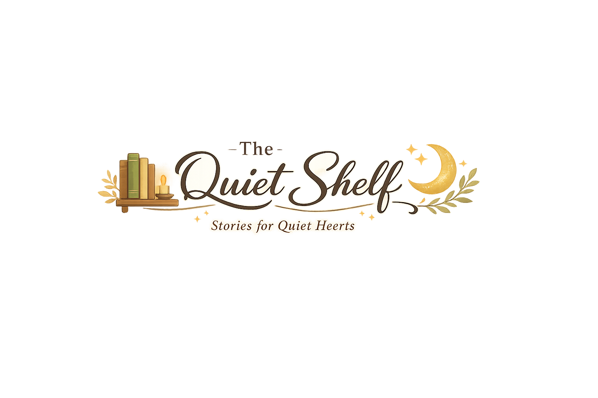

A quiet digital library where every story invites you to slow down, relax, and discover a new world one chapter at a time.
The Quiet Shelf was created for readers who enjoy peaceful moments, meaningful adventures, and beautifully written stories.
Whether you love fantasy, mystery, horror, adventure, or magical worlds, this library is a place where every reader can feel at home.
Welcome to The Quiet Shelf.
I created this website because I love stories, peaceful places, and the comfort that books bring. My goal was to build a simple, cozy space where readers can escape into different worlds without distractions.
Every novel here is shared with care, and I hope each chapter brings a little imagination, comfort, and inspiration to your day.
"Stories have a quiet way of staying with us long after the last page."
To create a peaceful online library where readers can discover wonderful stories, explore new adventures, and enjoy a relaxing, distraction-free reading experience.